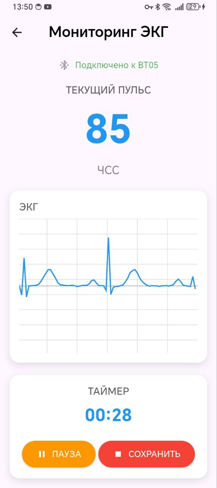

Удобное использование дома
Простая и понятная процедура измерения без сложной подготовки.
Портативная система для самостоятельного мониторинга электрической активности сердца и частоты сердечных сокращений в домашних условиях.
Узнать подробнее ↓

Создание портативного устройства, позволяющего пациентам самостоятельно и в удобных домашних условиях проводить профилактический мониторинг своего сердечно-сосудистого здоровья.
Простая и понятная процедура измерения без сложной подготовки.
Отображение ЭКГ и ЧСС в мобильном приложении во время измерения.
Формирование PDF-отчётов для хранения результатов и передачи специалисту.
Регулярный мониторинг показателей сердечно-сосудистой системы.


Программист
Студент 4 курса ТУСУР

Руководитель и разработчик
Студент 4 курса НГТУ

Медицинский консультант
Студент 4 курса НГМУ
Проект реализован при поддержке Фонда содействия инновациям в рамках программы «Студенческий стартап» мероприятия «Платформа университетского технологического предпринимательства» федерального проекта «Технологии».